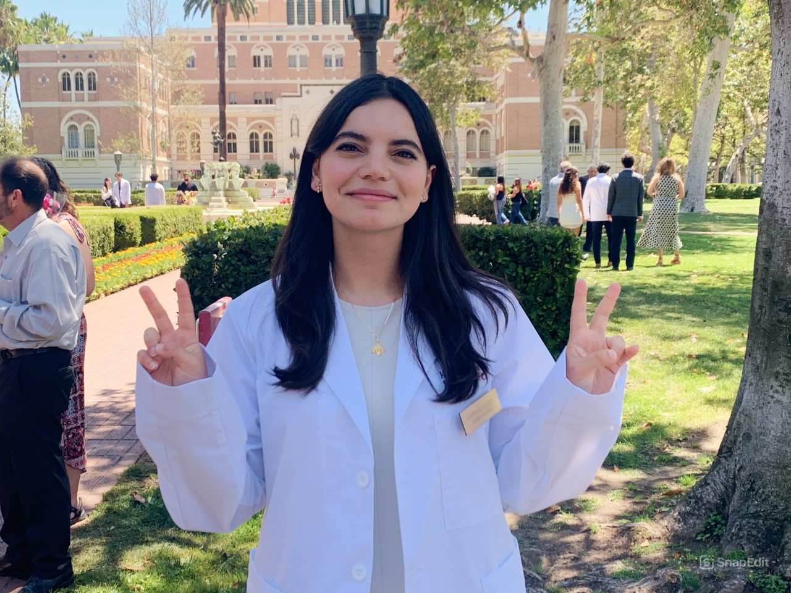

Mentorship for Representation in Medicine
Supporting students in the interim between dreaming of medicine and becoming a physician.
I'm Laura, a medical student at the Keck School of Medicine of USC offering individualized mentorship for students navigating the path to medicine without physicians in their family or strong healthcare connections.

My name is Laura and I'm a medical student at the Keck School of Medicine of USC who cares deeply about mentorship, increasing representation in medicine, and supporting students who are navigating the pre-med path without strong guidance or connections in healthcare.
I completed my undergraduate studies at USC and pursued medicine because of the opportunity to be present with patients during vulnerable moments and support them through difficult situations.
I come from a Middle Eastern background and have spent much of my clinical and volunteer work serving underserved Spanish-speaking communities across Los Angeles County.
Many of my experiences in healthcare have involved working with Spanish-speaking patients and communities that face barriers to care, including language barriers, lack of access, and limited healthcare resources.
These experiences reinforced how important representation and language-concordant care can be. Patients often feel more comfortable and understood when their physicians share similar backgrounds or cultural experiences.
Over the past several years I have mentored more than 15 students individually and longitudinally as they navigated different stages of the pre-med journey.
Through these experiences, I realized how little mentorship many students receive while trying to figure out the process on their own.
This mentorship exists because I began to see how many students were trying to navigate the path to medicine without guidance, mentorship, or family members in healthcare who could help explain the process.
I was incredibly fortunate to have mentors who helped guide me through different stages of the pre-med journey. Their advice and encouragement made a huge difference in helping me move forward with confidence.
Because of that support, I feel a strong desire to pay that mentorship forward and help other students who may not have the same access to guidance.
Many talented students are fully capable of becoming excellent physicians, but they are navigating the pre-med process without physicians in their family or mentors who can help explain how the system works.
My goal is to help make that path clearer and less isolating for students who feel like they are figuring everything out on their own.
Through my clinical work and volunteering with underserved communities, I have seen how important representation can be in medicine.
Patients often benefit when physicians share cultural backgrounds, language, or lived experiences with the communities they serve. Supporting students from diverse and underserved backgrounds ultimately helps strengthen healthcare for patients as well.
I’m excited to support students as they navigate their journey into medicine, and to be a small part of helping them succeed.
This mentorship is built around encouragement, honesty, and helping students move forward with clarity and confidence.
Supporting students who hope to serve underserved communities and pursue medicine with a sense of purpose.
Providing mentorship that is both honest and supportive so students feel capable of pursuing medicine even when the path feels uncertain.
Helping students understand the unspoken parts of the pre-med process so they can make informed decisions with less guesswork.
Encouraging more students from diverse backgrounds to pursue medicine and serve the communities that need them.
I especially created this mentorship for students who are navigating the path to medicine without physicians in their family, without strong healthcare connections, or without access to the kind of guidance that makes the process easier to understand.
Priority is given to Hispanic and Middle Eastern/North African (MENA) students, especially those without physicians in their family or strong healthcare connections.
This mentorship is for students from underserved, immigrant, underrepresented, or low-resource backgrounds, and for anyone trying to figure out the pre-med path without strong advising or family connections in medicine.
This is a strong fit for students who hope to serve underserved communities, value representation in medicine, and want to build a career that is both meaningful and community-centered.
Even if you do not fit the priority categories above, you are still welcome to apply if you feel this mentorship would be helpful for your journey.
Mentorship is individualized to where you are in the journey. Some students come with specific application questions, while others want broader guidance over time as they make decisions and move through different stages of the pre-med process.
I can help you think through pre-med course planning, academic priorities, and how to build a realistic path forward without unnecessary overwhelm.
I can help you shape your story, strengthen your writing, and think strategically about how to approach the application process.
I can help you think through extracurricular choices, research opportunities, and how to build experiences that are meaningful rather than just checking boxes.
You can ask candid questions about the realities of medicine, medical training, and whether this path feels aligned with your goals and values.
This mentorship is not designed to be just a one-time conversation. While we may begin with an initial meeting, my goal is to offer longitudinal support so students can continue checking in as new questions, challenges, and opportunities come up their journey.
Submit the mentorship application and share a little about your background, goals, and what kind of support would be most helpful right now.
If selected, we will start with an initial one-on-one conversation to talk through your goals, questions, and where you are in the process.
Many students continue mentorship longitudinally, checking in again at different stages of the pre-med journey as new decisions and questions arise.
The goal is to provide individualized guidance over time, not just a single session, so that students feel more supported as they move forward.
Mentorship is virtual and one-on-one. Most conversations begin as 30-minute sessions, with flexibility to go longer when needed depending on the student and the stage of the journey.
Mentorship is free, virtual, and designed to be individualized over time. If selected, you may begin with an initial one-on-one conversation and continue with longitudinal check-ins as new questions and decisions come up throughout your journey.
Submitting an application does not guarantee a mentorship spot.
The application is meant to help me understand your background, where you are in the pre-med journey, and what kind of support would be most helpful.
If selected, I will reach out with next steps for scheduling.
Any pre-med student is welcome to apply. Priority is given to Hispanic and Middle Eastern/North African (MENA) students, especially those without physicians in their family or strong mentorship networks in healthcare.
No. All students are welcome to apply. The priority categories reflect the communities I especially hope to support, but the mentorship is open to anyone who feels it would be helpful.
Yes. Mentorship is offered free of charge.
No. While mentorship may begin with an initial conversation, my goal is to offer longitudinal support over time so students can continue checking in as their journey progresses.
Yes. Conversations take place over Zoom.
The best way to reach me is through the application form. I do not post my personal contact information publicly on the website.